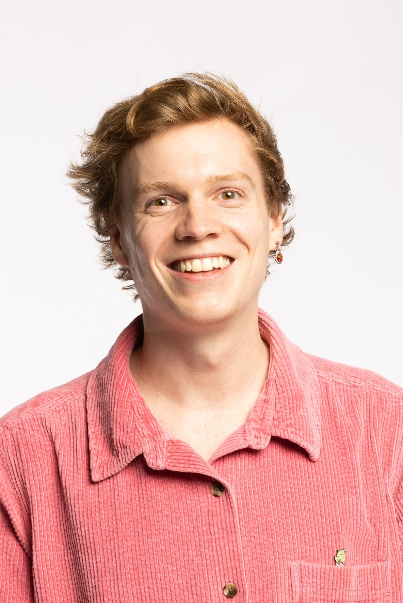
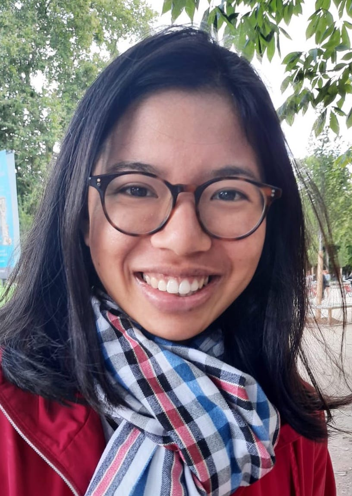
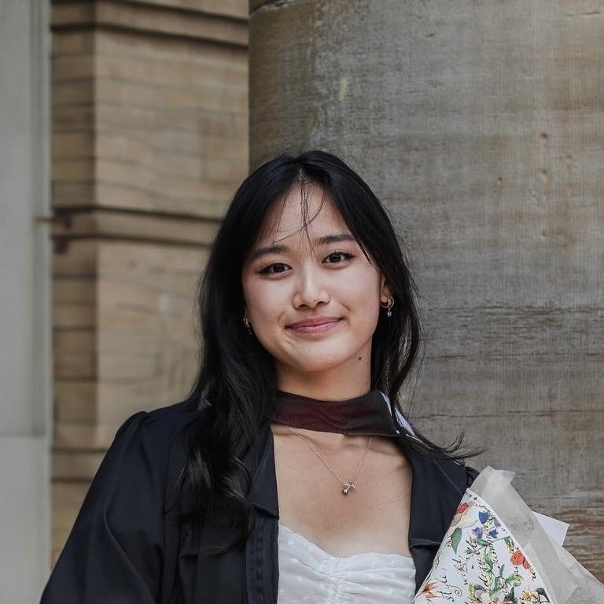
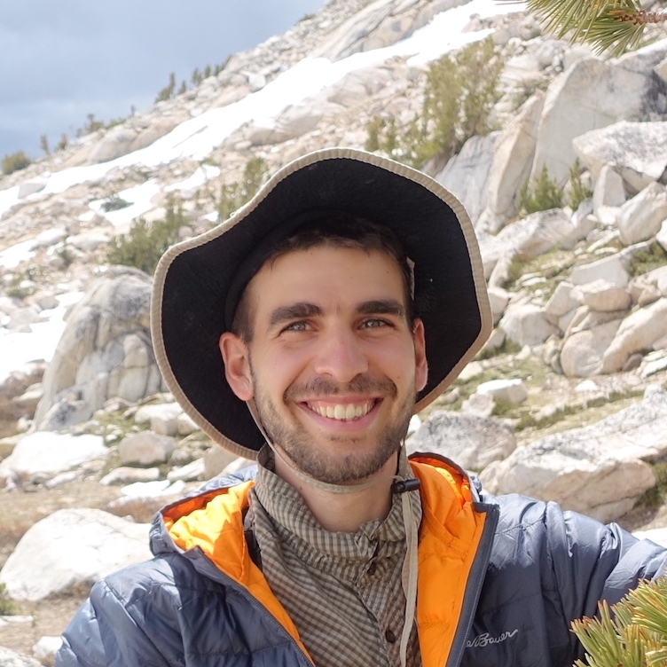
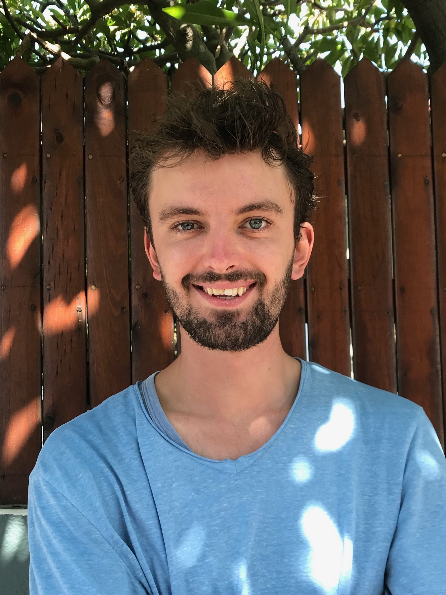

Instructors 2025

Leadership Team

Sara Beery
Sara Beery has always been passionate about the natural world, and she saw a need for technology-based approaches to conservation and sustainability challenges. This led her to pursue a PhD at Caltech, where her research focuses on computer vision for global-scale biodiversity monitoring. Her work is funded by an NSF Graduate Research Fellowship, a PIMCO Data Science Fellowship, and an Amazon AI4Science Fellowship. She works closely with Microsoft AI for Earth and Wildlife Insights (via Google Research) to translate her work into usable tools. Sara’s experiences as a professional ballerina, a queer woman, and a nontraditional student have taught her the value of unique and diverse perspectives in the research community. She’s passionate about increasing diversity and inclusion in STEM through mentorship, teaching, and outreach.

Eric Orenstein
Eric’s work lives at the intersection of ecology and computer vision, enabling unique studies of rapidly fluctuating marine environments. He uses imagery to study marine population dynamics, how they are impacted by their environment, and how they in turn influence the rest of the ecosystem. Eric has built and maintained imaging devices; worked with autonomous and remotely operated vehicles; executed field programs as a diver, small boat operator, and scientist aboardlarge research vessels; and used the data to study diverse organisms, from plankton to fish. Eric spends lots of time thinking about how to get robots to do useful things based on populations changes they encounter while underway.

Pietro Perona
Professor Perona's research focuses on vision: how do we see and how can we build machines that see. He is currently interested visual recognition, more specifically visual categorization. He is studying how machines can learn to recognize frogs, cars, faces and trees with minimal human supervision, and how machines can learn from human experts. His project 'Visipedia' has produced two smart device apps (iNaturalist and Merlin Bird ID) that anyone can use to recognize the species of plants and animals from a photograph.
In collaboration with Professors Anderson and Dickinson, Professor Perona is building vision systems and statistical techniques for measuring actions and activities in fruit flies and mice. This enables geneticists and neuroethologists to investigate the relationship between genes, brains and behavior.
Professor Perona is also interested in studying how humans perform visual tasks, such as searching and recognizing image content.
Instructors

Bjorn Lutjens
Björn is a postdoctoral associate in the MIT Department of Earth, Atmospheric, and Planetary Sciences. As running climate models can take multiple weeks on the world’s largest supercomputers, he is researching fast machine learning-based emulators, together with Prof. Raffaele Ferrari and Prof. Noelle Selin. He also advances methods in physics-informed machine learning and generative vision modeling for increasing the resolution of remote sensing-observable climate data. Previously, he has earned a Ph.D. with Prof. Dava Newman from MIT AeroAstro with a major/minor in Machine Learning and Earth System Modeling, earned an M.Sc. from MIT in reinforcement learning, and a B.Sc. from TUM in Engineering Science. He also windsurfs poorly.

Mélisande Teng
Mélisande Teng is a PhD candidate in Computer Science at Université de Montréal / Mila - Quebec AI Institute and her research focuses on applications of machine learning and remote sensing for biodiversity monitoring, in particular, bird and butterfly species distribution modeling and tree monitoring. She's passionate about bridging the machine learning and ecology communities and the general public. She holds a MSc in Mathematics, Vision and Learning (MVA) from ENS Paris-Saclay and a Msc in Management and Social Entrepreneurship from ESSEC Business School. She also likes writing and drawing comics.

Julia Chae
Julia is a PhD student at MIT EECS advised by Prof Sara Beery, generously supported by the Viterbi Graduate Fellowship and the NSERC PGS-D Fellowship. Broadly, she is interested in developing robust computer vision and machine learning algorithms for practical use across various domains, particularly in the natural world. Her current research focuses on investigating how synthetic data can be leveraged to as a training data source for real-world vision models, specifically targeting issues like long-tailed distributions and fine-grained classification tasks.

Sam Lapp
Currently, I'm conducting pursuing a PhD in the Kitzes Lab at the University of Pittsburgh. My research focuses on developing tools for automated the recognition of biological sounds, and applying these tools to better understand ecological processes and support conservation. Ultimately, I'm driven by a desire to protect biodiversity.

Tarun Sharma
Tarun is a PhD student in the lab of Prof. Joseph Parker at Caltech. He works on monitoring ants in the Angeles National Forest by deploying custom in-house made multi-sensor camera traps in front of ant colonies, and using AI to count and track individual ants. He has also worked on methods to better use unlabeled data for deep sea animal detection in cases of long-tailed distributions as an intern at MBARI. Prior to this he worked in the lab of Prof. Michael Dickinson on studying the role of the neurons involved in the flight and gaze stabilization systems of the fruit fly. His research interests involve computer vision applications for ecology, conservation technology, animal monitoring and behavior. Outside of work Tarun loves spending time in nature, either surfing, hiking or exploring the city, traveling, music and food.

Peter van Lunteren
Peter is a tech-savvy ecologist and data scientist passionate about developing data-driven solutions to enhance the quality of ecological research. As the founder of Addax Data Science, he focuses on creating tools that allow ecologists to spend less time on tedious tasks and more time on conservation efforts. In addition to his work with Addax, Peter has contributed to several conservation initiatives and is currently involved with three key organizations: Smart Parks, which uses cutting-edge technologies to protect endangered wildlife; the Inclusion Foundation, which provides basic income to village communities in Uganda; and Sensing Clues, which offers ready-to-use technologies for data collection, integration, and analysis in nature conservation. Additionally, Peter developed EcoAssist, an open-source platform that enables the annotation and deployment of machine learning models for automated species detection in camera trap footage.

Shir Bar
Shir is a Ph.D. candidate at Tel Aviv University, co-advised by Roi Holzman (School of Zoology) and Shai Avidan (School of Electrical Engineering). Her research interests are in the application of computer vision for ecology, specifically for identifying animal behaviors. Coming from a background in marine ecology, she is particularly interested in the challenges of applying existing computer vision methods to underwater imagery. Shir holds an M.Sc in Ecology, Evolution, and Behavior from the Hebrew University of Jerusalem, which she completed at the Interuniversity Institute for Marine Sciences in Eilat; where she is now based. She has also worked in various international NGOs and has a rich background in fieldwork. Her experiences in and out of academia have made her feel there is a strong need for interdisciplinary research to integrate computer vision approaches into the ecological research pipeline.